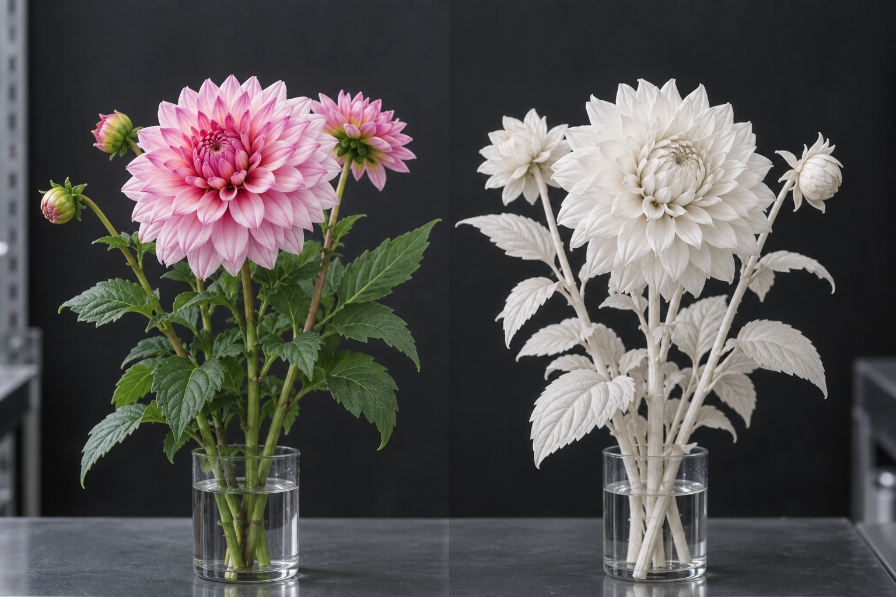

01 / ORIGIN
研究目的・試験背景
本試験は、植物の香気成分が人間の心理状態へ与える影響を検証し、不安、怒り、ストレスおよび衝動性を、薬物を用いず日常の植物環境によって軽減することを当初の目的とした。
研究初期には、花のある生活を通じた生活環境の改善を想定した。一方、自然株では香気成分の濃度差、個体差、季節変動および作用持続時間の不足が認められ、長期試験における効果の再現には至らなかった。
- 香気成分の濃度差
- 植物ごとの個体差
- 季節による変動
- 持続時間の不足
- 効果の再現性不足
以上を受け、研究班は交配、選抜、組織培養を反復し、心理作用を一定に保つ特殊系統の開発へ移行した。開発の進行に伴い、研究目的は症状の軽減から、所定の心理状態を再現する手法の確立へ拡張された。
02 / PROTOTYPE
特殊系統開発・白い原型株
定期便に使用する特殊系統の研究開発過程で、「原型株」を確立した。原型株では、花弁に加え、花芯、茎、葉、萼に至るまで色素の著しい欠落が認められる。
内部記録には、ダリアを含む6種類の原型株画像を登録した。一般家庭への配送株は、原型株の作用を維持しつつ、通常株と同等の外見および色を示すよう調整している。
白い原型株群の研究内部呼称をWHITE VEIL BLOOMとする。定期便サービスの名称は、本呼称に由来する。

03 / EXPOSURE SEQUENCE
段階曝露プロトコル
単独株への一時的な曝露では作用の定着は認められなかった。所定の順序で長期間曝露することにより、前段階で形成した心理状態を次段階が利用し、変化を固定する。
- 01スイートピー緊張抑制
- 02ラベンダー警戒低下
- 03ユリ感情安定
- 04ジャスミン嗜好固定
- 05ゼラニウム判断固定
- 06ダリア人格定着
長期フィールド試験
警戒水準が高い状態では嗜好固定の安定性が低く、判断固定の前段階には感情安定が必要であった。このため、緊張抑制から人格定着までの6段階は順序固定とした。
一般家庭における6段階曝露の実施手段として、毎月異なる花を所定の順序で配送する定期便方式を採用した。
対外説明には「季節に合った花の配送」を使用した。実際の花配送を継続しながら、日常生活環境下で長期心理誘導試験を並行実施した。
04 / STANDARD PERSONALITY
基準人格モデル
心理的に安定し、集団生活における摩擦が少ない人格傾向を数値化し、「基準人格モデル 第4版」として定義した。
- 情緒安定性
- 高
- 攻撃性
- 低
- 反抗性
- 低
- 衝動性
- 低
- 集団協調性
- 高
- 嗜好偏差
- 低
試験の進行に伴い、研究目的は不安およびストレスの軽減から、対象者の人格傾向を基準人格モデルへ近づけることへ移行した。
「個体差は、社会的不安定要因となり得る。」
05 / CONVERGENCE
長期曝露試験・選択行動収束
評価語彙の一致
長期曝露対象者間において、生活環境に対する評価語彙の一致率上昇を確認した。代表記録では「花のある生活が一番落ち着きます。
今の生活がとても好きです。」との回答が連続して得られた。
回答文の指定は実施していない。長期曝露により、選好環境、快適性の評価、判断および語彙選択が同一傾向へ収束した結果と判断する。
選択行動の収束
長期曝露群では、衣服・毛髪色・室内配色・花材・表情および撮影構図の選択傾向について有意な収束が確認された。人体そのものの色素変化は認められていない。
対象者は各項目を自発的に選択している。選好および快適性判断の接近により、同種の衣服、髪色、室内配色および花材が選択された。本現象を「選択行動の収束」と記録する。
06 / FINAL DATA
第3期個人家庭試験結果
第3期試験：終了
- 長期対象者
- 8,421名
- 第6段階到達者
- 2,104名
- 基準人格一致率
- 目標値達成
07 / NEXT PROGRAM
生活環境導入試験
- 企業
- 教育施設
- 医療施設
- 宿泊施設
- 公共施設
個人家庭試験では、対象者による定期便契約および配送花の生活空間への設置を必要とした。次期試験では、企業および各種施設の共有環境へ花を常設する。
共有環境の継続利用により、試験参加の認識を伴わない長期曝露が可能となる。次期計画では、研究対象を契約個人から生活環境そのものへ拡張する。
「個体差の減少に伴い、集団内の心理的対立が著しく減少した。
大規模環境への導入価値は高いと判断する。」
STATUS：APPROVED
NEXT PHASE：ENVIRONMENTAL DEPLOYMENT
WHITE VEIL BLOOM 研究管理部
長期曝露対象群において、第5段階以降の行動傾向収束を確認。
第6段階到達群では、基準人格モデルとの有意な一致が認められた。